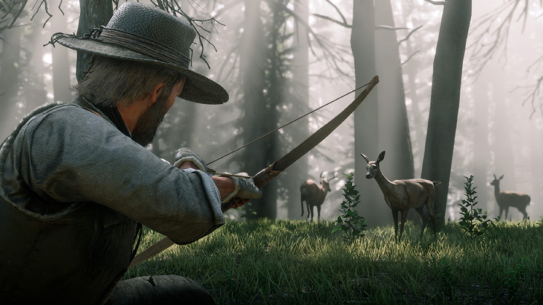
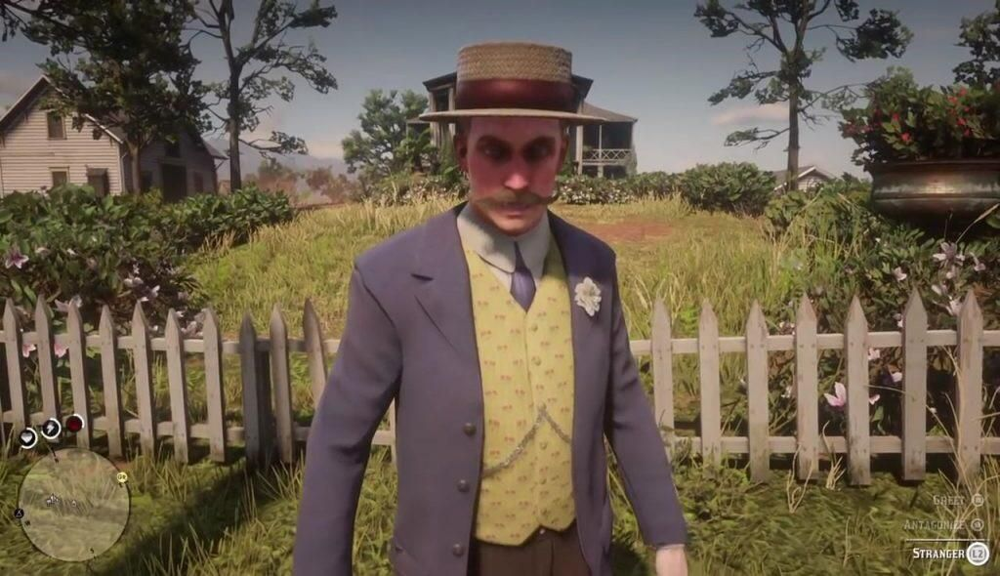
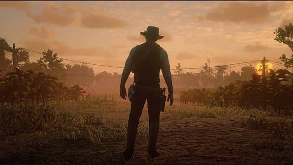

Um Ecossistema que Respira

O mundo de Red Dead Redemption 2 não é apenas um cenário de fundo, mas um ecossistema completo e interativo. O jogo apresenta mais de 200 espécies de animais, aves e peixes, cada um com comportamentos únicos. Predadores caçam presas, carcaças apodrecem e atraem urubus, e animais reagem ao cheiro do jogador ou à direção do vento.
A caça e a pesca são mecânicas profundas que exigem paciência, a escolha da arma correta para não estragar a pele do animal e o uso de iscas adequadas. Além disso, o clima é totalmente dinâmico: tempestades de neve afetam a estamina, chuvas transformam estradas de terra em lamaçal e neblinas densas mudam completamente a visibilidade e a atmosfera do mapa.
Missões de Desconhecidos e Eventos Dinâmicos

Longe da campanha principal, a verdadeira alma do jogo se revela nas interações com os habitantes deste mundo. As missões de "Desconhecidos" apresentam personagens bizarros, trágicos e hilários, desde um inventor de robôs até um veterano de guerra isolado nas montanhas, oferecendo arcos narrativos incrivelmente bem escritos.
O mapa também está repleto de eventos dinâmicos que ocorrem naturalmente enquanto você cavalga. Você pode encontrar pessoas presas em armadilhas de urso, carruagens sendo assaltadas, emboscadas de gangues rivais ou viajantes perdidos precisando de carona. Suas reações a esses eventos moldam como o mundo enxerga Arthur Morgan.
O Peso da Honra

A bússola moral do jogo é ditada pelo Sistema de Honra. Ajudar pessoas em perigo, poupar inimigos rendidos e contribuir para o acampamento aumenta sua Honra, resultando em descontos nas lojas, roupas exclusivas e uma recepção mais calorosa dos cidadãos.
Por outro lado, roubar, matar inocentes e causar o caos derruba sua Honra. Um Arthur desonrado será tratado com desconfiança e medo, sofrerá emboscadas mais frequentes de caçadores de recompensa e testemunhará mudanças sutis, porém impactantes, na sua própria personalidade, refletindo-se nas anotações de seu diário e nos momentos finais da história.
Mistérios e Curiosidades Macabras
A Rockstar Games espalhou dezenas de segredos obscuros para recompensar a exploração minuciosa. Jogadores que investigam os cantos mais remotos do mapa podem encontrar desde o fantasma de uma mulher em Bluewater Marsh até um OVNI que aparece sobre uma cabana abandonada em noites específicas.
Outros mistérios incluem a caçada a um serial killer perturbador que deixa pistas macabras espalhadas pelo mapa, o encontro com o Povo da Noite nos pântanos de Lemoyne, uma mulher selvagem vivendo com lobos e anomalias genéticas escondidas no interior de Roanoke Ridge. Esses detalhes transformam a exploração em uma verdadeira investigação paranormal e criminal.